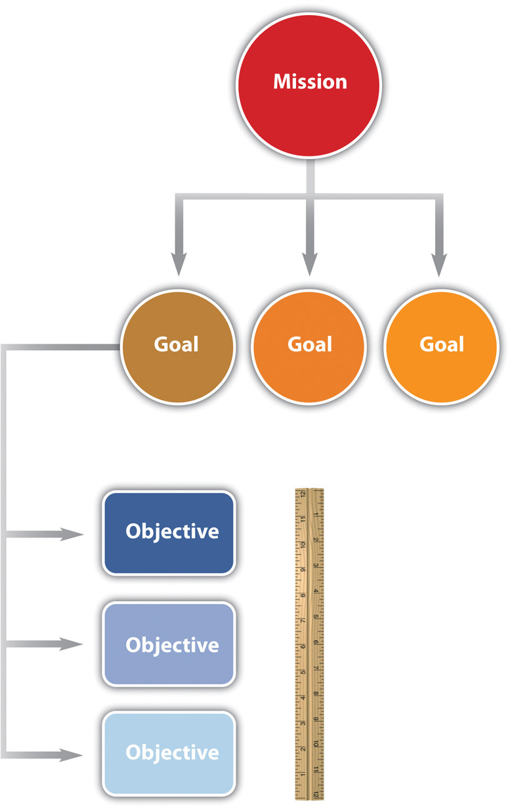
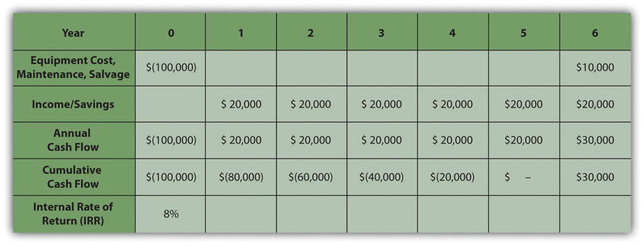

Projects are chosen for a variety of reasons and not all of them are apparent. The project manager must understand why a project was selected over other choices so that he or she can align the team toward justifying the choice that has been made by senior management.
The missionStatement of the purpose of an organization. of an organization is a statement of why it exists. For example, a police department might have its mission stated on the door of each patrol car—to protect and serve. A well-written mission statement is short and has the following sections:
The mission of the Philadelphia Police Department is to fight crime and the fear of crime, including terrorism, by working with our partners to enforce the laws, apprehend offenders, prevent crime from occurring, and improve the quality of life for all Philadelphians.Philadelphia Police Department, Philadelphia Police Department: Mission Statement, 2009, http://phillypolice.com/about/mission-statement (accessed July 16, 2009).
The missions of organizations can be categorized as profit, not for profit, and government. A business that is created to make a profit for its owners and stock holders must consider the cost of each project and how much profit it is likely to generate. The mission statement of a not-for-profit organization like a charity would emphasize the service it provides. A not-for-profit organization must control its costs so that it does not exceed its funding, and it is always seeking funding and is in competition with other not-for-profit organizations for funding from the same sources. A government agency, like a police department, is similar to a not-for-profit organization, but its sources of funding are usually taxes and fees. Its mission would include its responsibilities to the citizens it represents. Government organizations compete for funding from higher levels of government. Projects are more likely to be funded if the proposal for the project is closely aligned with the mission of the organization. The project manager must be aware of that mission while building a team and aligning it behind the purpose of the project.
Senior administrators of the organization decide on how to achieve the mission of the organization by choosing goals. For example, the director of a not-for-profit preschool that provides low-cost education for children of poor, single parents might set a goalAn end toward which effort is directed. of improving its reputation for quality. A goal is an end toward which effort is directed. The director meets with her staff and they consider several ways of achieving that goal. They decide to seek certification by a nationally known group that evaluates the quality of preschool programs. Obtaining this certification is an objectiveAn end toward which effort is directed that has a measurable outcome..
Figure 7.1 Relationships between Mission, Goals, and Objectives
In this text, we distinguish between the terms goals and objectives. An objective must have a measurable outcome. In this example, it is easy to measure whether or not the organization receives the certification, which is the distinguishing characteristic of an objective. The use of these terms is not standardized across the industry or in business, but we will be consistent within this text. To determine whether a statement is a goal or an objective, simply ask if there is a measurable outcome. Seeking the certification is an objective that can be met by treating it as a project that has a measurable outcome and a limited time frame.
If an organization’s mission is to make money, it will try to maximize the profits of the company by increasing the money coming in or decreasing the money going out. The flow of money is called cash flowThe movement of money where income is positive and spending is negative.. Money coming in is positive cash flow, and money going out is negative. The company can maximize profits by improving its operational efficiency or by executing projects. The company must raise money to fund projects. Companies can raise money in three ways:
If a company borrows money, it must pay back a portion of the amount it borrowed plus additional interestCharge for a loan.. The interest is a percentage of the amount of the loan that has not been repaid. The repayment of the loan and interest is usually paid quarterly or annually. To qualify for selection, a project that is intended to make or save money must be able to do the following:
When senior managers at a for-profit company decide which projects to fund, they must consider these economic issues.
To help managers choose between projects, they can use an unsophisticated measurement called simple paybackTime period it takes to recoup the original expense without considering interest payments or other complicating factors.. If the purpose of the project is to improve cash flow—make it more positive or less negative—the improved positive cash flow each year is applied to the original cost (negative cash flow) of the project to determine how many years it would take to pay back the original cost. It is assumed that after that date, the improved cash flow could be used for other purposes or paid out to owners. For example, if the company borrows $100,000 to fund the project and the project increases cash flow by $20,000 a year, the simple payback would be five years, as shown in Figure 7.3 "Simple Payback".
Figure 7.3 Simple Payback

The cash flow from each year is summed up in the cumulative cash flow row. When the cumulative cash flow becomes zero or positive, it means that the original cost has been paid back by the increased income or savings created by the investment.
Companies can use simple payback to establish a cutoff for project consideration. For example, management could declare that no projects will be considered that have a payback of more than three years. For projects that meet this criterion, projects with shorter simple payback periods would have an advantage in the selection process. Not-for-profit or government organizations are likely to approve projects with longer simple payback periods because they are not compared to other not-for-profit or government agencies based on their profitability.
Companies whose mission is to make a profit are usually trying to make more profit than their competitors. Simply paying back the loan is not sufficient. If the project involves buying and installing equipment to make a profit, executives can use another method called internal rate of return (IRR)Average annual return on an investment that earns or saves money.. The IRR is like an internal interest rate that can be used to compare the profitability of competing projects. To calculate an IRR, the company considers the cash flow each year for the expected life of the product of the project. It assumes that some of the annual cash flows will be negative and that they can vary from year to year due to other factors, such as lost production during changeover, periodic maintenance, and sale of used equipment. For example, a company decides to upgrade a manufacturing line with new equipment based on new technology. They know that the initial cash flow—shown in year zero—will be negative due to the expense of the conversion. They know that the new equipment has an expected life of six years before newer technologies make it out of date, at which time they can sell it for a certain salvage value. The inputs to the IRR calculation are the net cash flow for each year where at least one of them is negative and at least one of them is positive. The result is a percentage that indicates how well this project performs as an investment. Refer to Figure 7.5.
Figure 7.5
The internal rate of return measures the profitability of an investment.
The life of the equipment is part of the IRR calculation. If a project manager knows that senior management intends to sell the equipment in six years, team members can be made aware of that decision if it affects their choices.
Besides making money, there are many other reasons for a project to be selected, including the following:
The timing of the project can be very important. A project might be selected at a particular time of year for some of the following reasons:
If the project manager must make changes to the schedule at some point in the project that could affect its completion date, it is valuable to know if the project was selected because of timing.
In addition to knowing why a project was selected, it is valuable to know which senior executives supported or opposed the selection of the project and if the project manager’s supervisor was in favor of it or not. Because most project teams consist of people who do not report to the project manager but who report to other unit managers, they might not be available when you need them if their boss thinks other projects are more important. If a particular executive proposed the project and actively advocated for its approval, that person could be a source of support if the project runs into trouble and needs additional resources. A project championInfluential person who is willing to use his or her influence to help the project succeed., sometimes called an executive sponsor, is an influential person who is willing to use his or her influence to help the project succeed.
To identify the advocates and opponents of the project, begin by reading public documents (if available), such as the minutes of the meeting at which the project was approved. Next, the project manager can use his or her unofficial network of trusted colleagues to get their opinions. Those discussions should be informal and off the record. Those opinions might be inaccurate, but it is valuable to know what misunderstandings exist about a project. If executives in an organization are assigned as project sponsors, the project champion might be a different person.
When Vought Aircraft won a contract with Boeing to build a significant portion of the fuselage for the new 787 Dreamliner in Charleston, South Carolina, there was no existing workforce with aircraft experience. To give Vought Aircraft an incentive to locate the plant in South Carolina, Governor Mark Sanford, with the support of the legislature, committed to the recruitment and training of the workforce needed for the plant to be successful. The legislature provided several million dollars and assigned the role of developing a trained workforce to the South Carolina Technical College System and Trident Technical College, the local community college in Charleston, South Carolina.
Dr. Jim Hudgins, president of South Carolina’s Technical College System, assigned the most experienced project manager to the project and personally accepted the role of project sponsor.
Dr. Hudgins and Dr. Thornley, president of Trident Technical College, met with the project leadership at least monthly to review project plans and progress. Each month both Dr. Hudgins and Dr. Thornley assigned resources and removed barriers to project success. Dr. Thornley assigned procurement personnel to the project to assure materials were purchased and delivered in time to support the project schedule. She reallocated space to provide training laboratories for the project and assigned a college leader to the project full-time to coordinate actions with the college. Dr. Hudgins coordinated with the Governor’s office to assure the project received the appropriate level of support.
Both Dr. Hudgins and Dr. Thornley had the political power and the resources to assure the project had the autonomy and the resources to succeed. The project met every milestone, exceeded every measurable goal, and received high praise from Vought Management as the plant began operations on schedule.
Internalize your learning experience by preparing to discuss the following.
Choose an example from outside the assigned reading of a mission, goal, and objective that demonstrates the characteristics of each and how they relate to each other. The example can be from a real organization or it can be fictional. Describe the characteristics of a mission, goal, and objective, as defined in this chapter, and how the example demonstrates those characteristics.